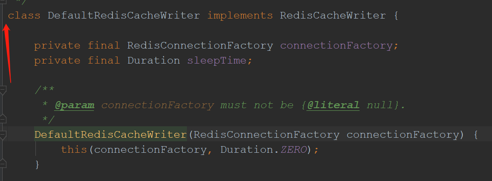

原文连接:https://www.cnblogs.com/top-housekeeper/p/11980973.html
背景前提
阅读说明（十分重要）
对于Cache和SpringCache原理不太清楚的朋友，可以看我之前写的文章：Springboot中的缓存Cache和CacheManager原理介绍
能关注SpringCache，想了解过期实现和自动刷新的朋友，肯定有一定Java基础的，所以先了解我的思想，达成共识比直接看代码重要许多
你可能只需要我里面其中一个点而不是原搬照抄
我在实现过程遇到三大坑，先跟大家说下，兴许对你有帮助
坑一：自己造轮子
对SpringCache不怎么了解，直接百度缓存看到Redis后，就直接使用RedisTemple开始工具类的搭建（说白了就是自己撸一个增删查改功能的类，然后到处使用）
自己造轮子不仅重复了前人的工作，还做的没别人好... ，不让Spring帮忙管理就享受不到@Cacheable这些注解等一系列福利
对于管理，扩展，使用方便程度都不友好
结论：不能放弃别人写好的工具类（我用Redis做缓存，那么对应的就是RedisCache、RedisManager和SpringCache注解等一套要用上）
坑二：Cache的设计思想不对（最重要）
在了解了SpringCache后，我十分愉快的用上了RedisCache和RedisCacheManager，真的十分简单方便
但跟看这边文章的你们一样，不满足于此，想着如果一个频繁访问缓存，到时候过期一个或多个过期了，是不是就缓存雪崩了
可当时我纠结的粗粒度太细了：
我希望每个缓存里的每个数据都能控制过期时间
比如：CacheName为systemCache的Cache里有a，b两个数据，我希望a数据5分钟过期，b数据10分钟过期
结论：这是完全没必要的，我们控制过期时间，应该以Cache为最小单位，而不是以里面单个数据
实际中缓存数据是不需要精细到单独处理的，都是一组一组的，如这几个数据在30分钟内失效，那一组数据是在
1小时内失效等等
例如：systemCache的ttl（详见1.2的CacheConfig）设置为半小时，那么它里面所有的数据都为离存入时间间隔30分钟后过期
我希望数据能纯自动刷新（不需要外在的触发条件）
比如：跑个线程，隔断时间自动扫描数据，进行纯自动更新
结论：目前没办法实现缓存纯自动更新，必须要使用到该缓存拿数据才能触发更新检查
纯自动更新没有意义，假设一个数据放了半小时没人访问要过期了，那就过期吧
因为缓存前提是一段时间频繁访问的数据，如果都没人访问了，就不能称之为缓存
不然就是一个系统长期存在的动态变量，不适用于缓存
坑三：对@Cacheble的理解太浅
于是想缓存数据能在过期前的几分钟里自动刷新一下，那就很不错
着手实现就想拦截@Cacheble，因为我们把@Cacheble放在访问数据库的方法上，那么做个切面针对@Cacheble，在调用目标方法前判断一下储存的时间，快过期就重新取数据，不过期就不执行方法不就行了（不得不吐槽SpringCache对于过期设计有点考虑不足，封装的死死的，没向外暴露任何接口）
结果@Cacheble的代理类的逻辑是这样的：
发现系统需要此缓存数据 -> 自动尝试get方法获得缓存 -> 存在则返回
发现系统需要此缓存数据 -> 自动尝试get方法获得缓存 -> 不存在才调用目标方法
所以切面切@Cacheble压根没用，别人是在缓存失效的情况下才进入目标方法，这个过程才会被你写的切面切！！
我的设计
网上有个比较好的自动刷新的实现（参考）：https://www.jianshu.com/p/275cb42080d9 但是不太喜欢
原因主要是不喜欢在@Cacheable里面的变量做文章（会对原来已有的注解有影响），关键还会覆盖，以第一个
@Cacheble写的时间为准，代码开发一段时间，天知道这个Cache哪个地方第一次指定
在这阐述下设计逻辑，大家看看下面内容不懂的时候可以回来这里看看
[中括号为涉及到的类]
涉及到如下8个类：
系统更新缓存的注解：
@UpdataCache：是缓存自动更新的标志，在Cache的get方法上表明，然后每次get数据时就会在切面判断是否快要过期
系统缓存管理器的接口：
I_SystemCacheMgr：此接口继承CacheManager，自定义缓存管理器需要实现此接口，需要实现里面一些更新缓存相关的方法
Spring中的Cache接口和CacheManager的实现：
RedisCacheEnhance：继承RedisCache，对其增强
RedisCacheMgr：继承RedisManager，对其增强（说白了就是增加些自己的方法，改写方法）
系统缓存管理器的注册类（向Spring注册）：
CacheConfig：Spring初始化时，向其注册管理类，里面写自己实现的注册逻辑
目标方法记载类：
CacheInvocation：为了能自动更新，那目标获得数据的方法要记录下来，才能要调用的时候主动调用
系统更新缓存的线程：
UpdateDataTask：实现Callable接口的线程类，负责数据更新时执行目标方法，写入缓存
系统缓存管理：
SystemCacheMgr：缓存数据存储信息在此保存，也负责管理I_SystemCacheMgr的实现类，进行更新操作的调用
系统缓存AOP切面：
CacheAspect：对@Cacheable拦截，进行获取数据的方法注册。对@UpdateCache注解进行拦截，进行自动更新判
断
接下来将依次展示代码，说下关键点
代码展示
@UpdataCache
该注解主要是对Cache的get方法进行标记，然后用AOP切面进行更新检查
1 /**
2 * @author NiceBin
3 * @description: 缓存更新接口，在Cache实现类的get方法上注解即可
4 * @date 2019/11/18 8:56
5 */
6 @Target({ElementType.METHOD, ElementType.TYPE})
7 @Retention(RetentionPolicy.RUNTIME)
8 @Inherited
9 public @interface UpdateCache {
10 }I_SystemCacheMgr
主要是规定了系统缓存管理器应该有的行为
1 /**
2 * 本系统的缓存接口，SystemCacheMgr统一保存数据记录的时间和控制缓存自动刷新流程
3 *
4 * 为了实现数据快过期前的自动刷新，需要以下操作：
5 * 1.实现此接口
6 * 如果用如RedisCacheManager这种写好的类，需要子类继承再实现此接口
7 * 如果Cache是CacheManager内部生成的，还需要重写createCache方法
8 * 使生成的Cache走一遍Spring初始化Bean的过程，交给Spring管理
9 * 这里主要为了Spring帮忙生成代理类，让注解生效
10 * 2.实现了 {@link Cache} 接口的类在get方法上加上注解 {@link UpdateCache} 才有更新效果，所以如果要用如RedisCache
11 * 这种写好的类，需要子类继承，并重写get方法
12 * 然后在get方法上加@UpdateCache
13 */
14 public interface I_SystemCacheMgr extends CacheManager{
15 /**
16 * 该数据是否过期
17 * true为已经过期
18 * @param cacheName 缓存名字
19 * @param id 数据id
20 * @param saveTime 该缓存内该数据的存储时间
21 * @return
22 * @throws Exception
23 */
24 boolean isApproachExpire(String cacheName, Object id, Timestamp saveTime) throws Exception;
25
26 /**
27 * 删除指定Cache里的指定数据
28 * @param cacheName
29 * @param id
30 * @throws Exception
31 */
32 void remove(String cacheName, Object id) throws Exception;
33
34 /**
35 * 清除所有缓存内容
36 * @throws Exception
37 */
38 void clearAll() throws Exception;
39
40 /**
41 * 获得所有的Cache
42 * @return
43 */
44 ConcurrentMap<String, Cache> getAllCaches();
45 }RedisCacheEnhance
写上@UpdateCache后，才能被AOP切入
1 /**
2 * @author NiceBin
3 * @description: 增强RedisCache
4 * 为了能在get方法写上@Update注解，实现自动刷新
5 * @date 2019/7/4 13:24
6 */
7 public class RedisCacheEnhance extends RedisCache {
8
9 /**
10 * Create new {@link RedisCacheEnhance}.
11 *
12 * @param name must not be {@literal null}.
13 * @param cacheWriter must not be {@literal null}.
14 * @param cacheConfig must not be {@literal null}.
15 */
16 protected RedisCacheEnhance(String name, RedisCacheWriter cacheWriter, RedisCacheConfiguration cacheConfig) {
17 super(name, cacheWriter, cacheConfig);
18 }
19
20 @UpdateCache
21 public ValueWrapper get(Object key){
22 System.out.println("进入get方法");
23 return super.get(key);
24 }
25
26 @UpdateCache
27 public <T> T get(Object key, @Nullable Class<T> type){
28 return super.get(key,type);
29 }
30
31 @UpdateCache
32 public <T> T get(Object key, Callable<T> valueLoader){
33 return super.get(key,valueLoader);
34 }RedisCacheMgr
RedisManager的增强类，这里涉及的知识点比较多，跟大家简单聊聊
1 /**
2 * @author NiceBin
3 * @description: RedisCacheManager增强类，为了实现本系统缓存自动更新功能
4 * @date 2019/11/25 9:07
5 */
6 public class RedisCacheMgr extends RedisCacheManager implements I_SystemCacheMgr {
7
8 private final RedisCacheWriter cacheWriter;
9 private ConcurrentMap<String, Cache> caches = new ConcurrentHashMap<>();
10
11 private DefaultListableBeanFactory defaultListableBeanFactory;
12
13 public RedisCacheMgr(RedisCacheWriter cacheWriter, RedisCacheConfiguration defaultCacheConfiguration, Map<String, RedisCacheConfiguration> initialCacheConfigurations, boolean allowInFlightCacheCreation) {
14 super(cacheWriter, defaultCacheConfiguration, initialCacheConfigurations, allowInFlightCacheCreation);
15 this.cacheWriter = cacheWriter;
16
17 }
18
19 /**
20 * 重写createRedisCache的方法，生成自己定义的Cache
21 * 这里主要要让Spring来生成代理Cache，不然在Cache上的注解是无效的
22 * @param name
23 * @param cacheConfig
24 * @return
25 */
26 @Override
27 protected RedisCacheEnhance createRedisCache(String name, @Nullable RedisCacheConfiguration cacheConfig) {
28 //利用Spring生成代理Cache
29 BeanDefinition beanDefinition = new RootBeanDefinition(RedisCacheEnhance.class);
30 //因为只有有参构造方法，所以要添加参数
31 ConstructorArgumentValues constructorArgumentValues = beanDefinition.getConstructorArgumentValues();
32 constructorArgumentValues.addIndexedArgumentValue(0,name);
33 constructorArgumentValues.addIndexedArgumentValue(1,cacheWriter);
34 constructorArgumentValues.addIndexedArgumentValue(2,cacheConfig);
35
36 //如果有属性需要设置，还能这样做，不过需要有对应属性名的set方法
37 //definition.getPropertyValues().add("propertyName", beanDefinition.getBeanClassName());
38
39 ApplicationContext applicationContext = SystemContext.getSystemContext()
40 .getApplicationContext();
41 //需要这样获取的DefaultListableBeanFactory类才能走一遍完整的Bean初始化流程！！
42 //像applicationContext.getBean(DefaultListableBeanFactory.class)都不好使！！
43 DefaultListableBeanFactory defaultListableBeanFactory = (DefaultListableBeanFactory)applicationContext.getAutowireCapableBeanFactory();
44 defaultListableBeanFactory.registerBeanDefinition(name,beanDefinition);
45
46 RedisCacheEnhance redisCacheEnhance = (RedisCacheEnhance)applicationContext.getBean(name);
47 caches.put(name, redisCacheEnhance);
48 return redisCacheEnhance;
49 }
50
51 /**
52 * 过期规则为：缓存有效时间-（目前时间-记录时间）<= 随机时间
53 * 随机时间是防止同一时刻过期时间太多，造成缓存雪崩，在SystemStaticValue中缓存项里配置
54 * true为将要过期（可以刷新了）
55 *
56 * @param cacheName 缓存名称
57 * @param id 数据id
58 * @param saveTime 储存时间
59 * @return
60 */
61 @Override
62 public boolean isApproachExpire(String cacheName, Object id, Timestamp saveTime) throws NoSuchAlgorithmException {
63 long ttl = -1;
64
65 RedisCacheConfiguration configuration = this.getCacheConfigurations().get(cacheName);
66 ttl = configuration.getTtl().getSeconds();
67
68 if (ttl != -1 && saveTime!=null) {
69 int random = Tool.getSecureRandom(SystemStaticValue.CACHE_MIN_EXPIRE, SystemStaticValue.CACHE_MAX_EXPIRE);
70 Date date = new Date();
71 long theNowTime = date.getTime() / 1000;
72 long theSaveTime = saveTime.getTime() / 1000;
73 if (ttl - (theNowTime - theSaveTime) <= random) {
74 return true;
75 }
76 }
77 return false;
78 }
79
80 @Override
81 public void remove(String cacheName, Object id) throws Exception {
82 Cache cache = this.getCache(cacheName);
83 cache.evict(id);
84 }
85
86
87 /**
88 * 清除所有缓存内容
89 *
90 * @throws Exception
91 */
92 @Override
93 public void clearAll() throws Exception {
94 Collection<String> cacheNames = this.getCacheNames();
95 Iterator<String> iterator = cacheNames.iterator();
96 while (iterator.hasNext()) {
97 String cacheName = iterator.next();
98 Cache redisCache = this.getCache(cacheName);
99 redisCache.clear();
100 }
101 }
102
103 @Override
104 public ConcurrentMap<String, Cache> getAllCaches() {
105 return caches;
106 }
107 }知识点：如何阅读源码来帮助自己注册目标类
这是个很关键的点，我们想继承RedisManager，那构造函数肯定要super父类的构造函数（而且RedisManager看设计并不太推荐让我们继承它的）
所以父类构造函数的参数，我们怎么获取，怎么模拟就是关键性问题
第一步：百度，继承RedisManager怎么写
不过这类不热门的问题，大多数没完美答案（就是能针对你的问题），可是有很多擦边答案可以给你借鉴，我获取到这样的信息
1 RedisCacheManager redisCacheManager = RedisCacheManager.builder(redisConnectionFactory)
2 .cacheDefaults(defaultCacheConfig) // 默认配置（强烈建议配置上）。 比如动态创建出来的都会走此默认配置
3 .withInitialCacheConfigurations(initialCacheConfiguration) // 不同cache的个性化配置
4 .build();如果我们想配个性化的RedisCacheManager，可以这样创建
可以发现，这个build()方法就是我们的入手点，我们跟进去看看它的参数有什么
1 /**
2 * Create new instance of {@link RedisCacheManager} with configuration options applied.
3 *
4 * @return new instance of {@link RedisCacheManager}.
5 */
6 public RedisCacheManager build() {
7
8 RedisCacheManager cm = new RedisCacheManager(cacheWriter, defaultCacheConfiguration, initialCaches,
9 allowInFlightCacheCreation);
10
11 cm.setTransactionAware(enableTransactions);
12
13 return cm;
14 }继续跟踪看RedisCacheManager的方法
1 public RedisCacheManager(RedisCacheWriter cacheWriter, RedisCacheConfiguration defaultCacheConfiguration,
2 Map<String, RedisCacheConfiguration> initialCacheConfigurations, boolean allowInFlightCacheCreation) {
3
4 this(cacheWriter, defaultCacheConfiguration, allowInFlightCacheCreation);
5
6 Assert.notNull(initialCacheConfigurations, "InitialCacheConfigurations must not be null!");
7
8 this.initialCacheConfiguration.putAll(initialCacheConfigurations);
9 }这里可发现defaultCacheConfiguration和initialCacheConfigurations是我们传入的参数，allowInFlightCacheCreation就是简单的布尔值，能不能动态创建Cache而已
所以我们想办法得到RedisCacheWriter这就大功告成了呀，怎么找，Ctrl+F，搜索变量，如图：
一个个查找，看cacheWriter是哪里赋值进来的，最后发现
1 private RedisCacheManagerBuilder(RedisCacheWriter cacheWriter) {
2 this.cacheWriter = cacheWriter;
3 }然后继续搜索RedisCacheManagerBuilder哪里被调用：

重复以上步骤，有变量就搜索变量，有方法就搜索调用的地方，最后发现
1 public static RedisCacheManagerBuilder fromConnectionFactory(RedisConnectionFactory connectionFactory) {
2
3 Assert.notNull(connectionFactory, "ConnectionFactory must not be null!");
4
5 return builder(new DefaultRedisCacheWriter(connectionFactory));
6 }看第5行，我只要有了RedisConnectionFactory，直接new一个就行（事实真的如此吗），进去后发现

这个类不是public，外部是不允许new的，兄弟，还得继续跟代码呀，这个类不是public，所以再看这个类已经无意义了，我们发现它实现了RedisCacheWriter接口，应该从这入手看看
1 public interface RedisCacheWriter {
2
3 /**
4 * Create new {@link RedisCacheWriter} without locking behavior.
5 *
6 * @param connectionFactory must not be {@literal null}.
7 * @return new instance of {@link DefaultRedisCacheWriter}.
8 */
9 static RedisCacheWriter nonLockingRedisCacheWriter(RedisConnectionFactory connectionFactory) {
10
11 Assert.notNull(connectionFactory, "ConnectionFactory must not be null!");
12
13 return new DefaultRedisCacheWriter(connectionFactory);
14 }
15
16 /**
17 * Create new {@link RedisCacheWriter} with locking behavior.
18 *
19 * @param connectionFactory must not be {@literal null}.
20 * @return new instance of {@link DefaultRedisCacheWriter}.
21 */
22 static RedisCacheWriter lockingRedisCacheWriter(RedisConnectionFactory connectionFactory) {
23
24 Assert.notNull(connectionFactory, "ConnectionFactory must not be null!");
25
26 return new DefaultRedisCacheWriter(connectionFactory, Duration.ofMillis(50));
27 }到这问题就彻底解决了，接口定义了两个获取RedisCacheWriter的方法，只需要传参数RedisConnectionFactory即可，而这个类Spring会自动配置（具体Spring中如何配置Redis自行百度，十分简单）
至此super父类所需要的参数，我们都能自己构造了
这个知识点主要是想让大家遇到问题有这个最基本的解决的思路，迎难而上~
知识点：用代码动态向Spring注册Bean
RedisCacheMgr的createRedisCache方法中看到，我们生成的Cache需要像Spring注册，这是为什么呢
因为我们要想@UpdateCache注解，那必须得生成代理类，交给Spring管理，否则注解无效的
具体注册我也没深入研究（今后会写一篇此博文），不过要按照这种方式注册才有效
1 ApplicationContext applicationContext = SystemContext.getSystemContext()
2 .getApplicationContext();
3 //需要这样获取的DefaultListableBeanFactory类才能走一遍完整的Bean初始化流程！！
4 //像applicationContext.getBean(DefaultListableBeanFactory.class)都不好使！！
5 DefaultListableBeanFactory defaultListableBeanFactory = (DefaultListableBeanFactory)applicationContext.getAutowireCapableBeanFactory();
6 defaultListableBeanFactory.registerBeanDefinition(name,beanDefinition);CacheConfig
这个类是为了加载自定义的CacheManager
1 /**
2 * @author NiceBin
3 * @description: CacheManager初始化
4 * 目前系统只用一个Manager，使用RedisCacheManager
5 * 根据SystemStaticValue中的SystemCache枚举内容进行Cache的注册
6 * 配置启动前需要DefaultListableBeanFactory.class先加载完成
7 * 不然CacheManager或者Cache想用的时候会报错
8 * @date 2019/11/13 17:02
9 */
10 @Configuration
11 @Import(DefaultListableBeanFactory.class)
12 public class CacheConfig {
13
14 @Autowired
15 RedisConnectionFactory redisConnectionFactory;
16
17 @Bean
18 public RedisCacheMgr cacheManager() {
19
20 //创建Json自定义序列化器
21 FastJsonRedisSerializer<Object> fastJsonRedisSerializer = new FastJsonRedisSerializer<>(Object.class);
22 //包装成SerializationPair类型
23 RedisSerializationContext.SerializationPair serializationPair = RedisSerializationContext.SerializationPair.fromSerializer(fastJsonRedisSerializer);
24
25 RedisCacheConfiguration defaultCacheConfig = RedisCacheConfiguration.defaultCacheConfig()
26 .entryTtl(Duration.ofDays(1))
27 .computePrefixWith(cacheName -> "Cache"+cacheName);
28 // 针对不同cacheName，设置不同的过期时间，用了双括号初始化方法~
29 Map<String, RedisCacheConfiguration> initialCacheConfiguration = new HashMap<String, RedisCacheConfiguration>() {{
30 SystemStaticValue.SystemCache[] systemCaches = SystemStaticValue.SystemCache.values();
31 Arrays.asList(systemCaches).forEach((systemCache)->
32 put(systemCache.getCacheName(),RedisCacheConfiguration.defaultCacheConfig().entryTtl(Duration.ofSeconds(systemCache.getSurviveTime()))
33 .serializeValuesWith(serializationPair)));
34 }};
35 RedisCacheMgr redisCacheMgr = new RedisCacheMgr(RedisCacheWriter.lockingRedisCacheWriter(redisConnectionFactory),defaultCacheConfig,initialCacheConfiguration,true);
36
37 //设置白名单---非常重要********
38 /*
39 使用fastjson的时候：序列化时将class信息写入，反解析的时候，
40 fastjson默认情况下会开启autoType的检查，相当于一个白名单检查，
41 如果序列化信息中的类路径不在autoType中，autoType会默认开启
42 反解析就会报com.alibaba.fastjson.JSONException: autoType is not support的异常
43 */
44 ParserConfig.getGlobalInstance().addAccept("com.tophousekeeper");
45 return redisCacheMgr;
46 }
47 }自定义JSON序列化类
1 /*
2 要实现对象的缓存，定义自己的序列化和反序列化器。使用阿里的fastjson来实现的方便多。
3 */
4 public class FastJsonRedisSerializer<T> implements RedisSerializer<T> {
5 private static final Charset DEFAULT_CHARSET = Charset.forName("UTF-8");
6 private Class<T> clazz;
7
8 public FastJsonRedisSerializer(Class<T> clazz) {
9 super();
10 this.clazz = clazz;
11 }
12
13 @Override
14 public byte[] serialize(T t) throws SerializationException {
15 if (null == t) {
16 return new byte[0];
17 }
18 return JSON.toJSONString(t, SerializerFeature.WriteClassName).getBytes(DEFAULT_CHARSET);
19 }
20
21 @Override
22 public T deserialize(byte[] bytes) throws SerializationException {
23 if (null == bytes || bytes.length <= 0) {
24 return null;
25 }
26 String str = new String(bytes, DEFAULT_CHARSET);
27 return (T) JSON.parseObject(str, clazz);
28 }
29 }29-34行就是根据配置加载系统默认的几个缓存（涉及到Lambda表达式的循环知识）
1 public class SystemStaticValue {
2 .....
3 //以下为缓存信息的配置(CACHE开头)--------------------------------------------------------
4 //系统缓存名称及过期时间（秒）
5 public enum SystemCache{
6 //每日缓存,有效时间24小时
7 DAY("dailyCache",60),
8 //半日缓存，有效时间12小时
9 HALF_DAY("halfDayCache",12*60*60),
10 //1小时缓存
11 ONE_HOUR("oneHour",1*60*60),
12 //半小时缓存
13 HALF_HOUR("halfHour",30*60);
14 private String cacheName;
15 private long surviveTime;
16
17 SystemCache(String cacheName,long surviveTime){
18 this.cacheName = cacheName;
19 this.surviveTime = surviveTime;
20 }
21
22 public String getCacheName() {
23 return cacheName;
24 }
25
26 public void setCacheName(String cacheName) {
27 this.cacheName = cacheName;
28 }
29
30 public long getSurviveTime() {
31 return surviveTime;
32 }
33
34 public void setSurviveTime(long surviveTime) {
35 this.surviveTime = surviveTime;
36 }
37 }
38 }知识点：@Import的重要性
在35行，创建RedisCacheMgr 的时候，就会调用里面的CreateCache的方法，里面会把Cache向Spring注册，需要用到DefaultListableBeanFactory类
所以在这里必须要@import，保证其已经加载，不然到时候创建会报类不存在
知识点：自定义序列化
因为不自定义成JSON格式序列化，那么存在Redis的内容不可直观的看出来（都是乱七八糟的东西，不知道存的对不对），所以在21-23行要换成JSON序列化格式
大家有兴趣可以看下这篇博文：https://blog.csdn.net/u010928589/article/details/84313987 这是一篇说Redis序列化如何自定义的思考过程，跟我上面的RedisCacheMgr实现思想类似
知识点：Lambda表达式
之前我也觉得不好用，不便于理解（其实就是我不会），然后这次下定决心弄懂，发现还是很不错的（真香），给大家推荐这篇博文理解：https://blog.csdn.net/qq_25955145/article/details/82670160
CacheInvocation：
这个类主要是为了记录调用的获得缓存数据的方法信息，以便于自动更新时主动调用（下面这个Task就用到了）
1 /**
2 * @author NiceBin
3 * @description: 记录被 {@link Cacheable} 注解过的方法信息，为了主动更新缓存去调用对应方法
4 * @date 2019/11/26 16:28
5 */
6 public class CacheInvocation {
7 private Object key;
8 private final Object targetBean;
9 private final Method targetMethod;
10 private Object[] arguments;
11
12 public CacheInvocation(Object key, Object targetBean, Method targetMethod, Object[] arguments) {
13 this.key = key;
14 this.targetBean = targetBean;
15 this.targetMethod = targetMethod;
16 //反射时不用检查修饰符，略微提高性能
17 this.targetMethod.setAccessible(true);
18 if (arguments != null && arguments.length != 0) {
19 this.arguments = Arrays.copyOf(arguments, arguments.length);
20 }
21 }
22
23 public Object[] getArguments() {
24 return arguments;
25 }
26
27 public Object getTargetBean() {
28 return targetBean;
29 }
30
31 public Method getTargetMethod() {
32 return targetMethod;
33 }
34
35 public Object getKey() {
36 return key;
37 }
38 }UpdateDataTask：
这里就是主动更新数据的地方啦
1 /**
2 * @author NiceBin
3 * @description: 刷新缓存某个数据的任务
4 * @date 2019/11/29 15:29
5 */
6 public class UpdateDataTask implements Callable {
7 //将要执行的方法信息
8 private CacheInvocation cacheInvocation;
9 //对应要操作的缓存
10 private Cache cache;
11 //对应要更新的数据id
12 private Object id;
13
14 /**
15 * 初始化任务
16 * @param cacheInvocation
17 * @param cache
18 * @param id
19 */
20 public UpdateDataTask(CacheInvocation cacheInvocation,Cache cache,Object id){
21 this.cacheInvocation = cacheInvocation;
22 this.cache = cache;
23 this.id = id;
24 }
25
26 @Override
27 public Object call() throws Exception {
28 if(cacheInvocation == null){
29 throw new SystemException(SystemStaticValue.CACHE_EXCEPTION_CODE,"更新数据线程方法信息不能为null");
30 }
31 cache.put(id,methodInvoke());
32 return true;
33 }
34
35 /**
36 * 代理方法的调用
37 * @return
38 */
39 private Object methodInvoke() throws Exception{
40 MethodInvoker methodInvoker = new MethodInvoker();
41 methodInvoker.setArguments(cacheInvocation.getArguments());
42 methodInvoker.setTargetMethod(cacheInvocation.getTargetMethod().getName());
43 methodInvoker.setTargetObject(cacheInvocation.getTargetBean());
44 methodInvoker.prepare();
45 return methodInvoker.invoke();
46 }
47 }SystemCacheMgr：
系统缓存管理的核心类，统筹全局
1 /**
2 * @author NiceBin
3 * @description: 本系统的缓存管理器
4 * 数据自动刷新功能，要配合 {@link UpdateCache}才能实现
5 *
6 * 目前没办法实现缓存纯自动更新，必须要使用到该缓存拿数据进行触发
7 * 纯自动更新没有意义，假设一个数据放了半小时没人访问要过期了，那就过期吧
8 * 因为缓存前提是一段时间频繁访问的数据，如果都没人访问了，就不能称之为缓存
9 * 不然就是一个系统长期存在的动态变量，不适用于缓存
10 * @date 2019/11/14 16:18
11 */
12 @Component
13 public class SystemCacheMgr {
14 //目前系统只考虑一个CacheManager
15 //必须有一个I_SystemCache的实现类，多个实现类用@Primary注解，类似于Spring的缓存管理器
16 @Autowired
17 private I_SystemCacheMgr defaultCacheMgr;
18 //系统的线程池类
19 @Autowired
20 private SystemThreadPool systemThreadPool;
21 //所有缓存的所有数据记录Map
22 //外部Map中，key为缓存名称，value为该缓存内的数据储存信息Map
23 //内部Map中，key为数据的id，value为记录该数据的储存信息
24 private ConcurrentHashMap<String, ConcurrentHashMap<Object, DataInfo>> dataInfoMaps = new ConcurrentHashMap<>();
25
26 /**
27 * 储存信息内部类，用于记录
28 * 获取要调用获取方法，因为加锁了线程才安全
29 */
30 class DataInfo {
31 //记录该数据的时间
32 private Timestamp saveTime;
33 //获得此数据的方法信息
34 private CacheInvocation cacheInvocation;
35 //保证只有一个线程提前更新此数据
36 private ReentrantLock lock;
37
38 public synchronized void setSaveTime(Timestamp saveTime) {
39 this.saveTime = saveTime;
40 }
41
42
43 public synchronized void setCacheInvocation(CacheInvocation cacheInvocation) {
44 this.cacheInvocation = cacheInvocation;
45 }
46
47 public synchronized void setLock(ReentrantLock lock) {
48 this.lock = lock;
49 }
50 }
51
52 /**
53 * 获得DataInfo类，如果为空则创建一个
54 * @param cacheName
55 * @param id
56 * @return
57 */
58 private DataInfo getDataInfo(String cacheName, Object id) {
59 ConcurrentHashMap<Object, DataInfo> dateInfoMap = dataInfoMaps.get((cacheName));
60 DataInfo dataInfo;
61 if (dateInfoMap == null) {
62 //简单的锁住了，因为创建这个对象挺快的
63 synchronized (this) {
64 //重新获取一次进行判断，因为dateInfoMap是局部变量，不能保证同步
65 dateInfoMap = dataInfoMaps.get((cacheName));
66 if (dateInfoMap == null) {
67 dateInfoMap = new ConcurrentHashMap<>();
68 dataInfo = new DataInfo();
69 dataInfo.setLock(new ReentrantLock(true));
70 dateInfoMap.put(id, dataInfo);
71 dataInfoMaps.put(cacheName, dateInfoMap);
72 }
73 }
74 }
75 //这里不能用else，因为多线程同时进入if，后面进的dataInfo会是null
76 dataInfo = dateInfoMap.get(id);
77
78 return dataInfo;
79 }
80
81 /**
82 * 为该数据放入缓存的时间记录
83 *
84 * @param id 数据id
85 */
86 public void recordDataSaveTime(String cacheName, Object id) {
87 Date date = new Date();
88 Timestamp nowtime = new Timestamp(date.getTime());
89 DataInfo dataInfo = getDataInfo(cacheName, id);
90 dataInfo.setSaveTime(nowtime);
91 }
92
93 /**
94 * 记录获得此数据的方法信息，为了主动更新缓存时的调用
95 *
96 * @param cacheName 缓存名称
97 * @param id 数据id
98 * @param targetBean 目标类
99 * @param targetMethod 目标方法
100 * @param arguments 目标方法的参数
101 */
102 public void recordCacheInvocation(String cacheName, String id, Object targetBean, Method targetMethod, Object[] arguments) {
103 DataInfo dataInfo = getDataInfo(cacheName, id);
104 CacheInvocation cacheInvocation = new CacheInvocation(id, targetBean, targetMethod, arguments);
105 //锁在这方法里面有
106 dataInfo.setCacheInvocation(cacheInvocation);
107 }
108
109 /**
110 * 数据自动刷新功能，要配合 {@link UpdateCache}才能实现
111 * 原理：先判断数据是否过期，如果数据过期则从缓存删除。
112 *
113 * @param cacheName 缓存名称
114 * @param id 数据id
115 * @return
116 */
117 public void autoUpdate(String cacheName, Object id) throws Exception {
118 DataInfo dataInfo = getDataInfo(cacheName, id);
119 Cache cache = defaultCacheMgr.getCache(cacheName);
120
121
122 //如果没有保存的时间，说明该数据还从未载入过
123 if (dataInfo.saveTime == null) {
124 return;
125 }
126 if (defaultCacheMgr.isApproachExpire(cacheName, id, dataInfo.saveTime)) {
127 if (dataInfo.lock.tryLock()) {
128 //获取锁后再次判断数据是否过期
129 if (defaultCacheMgr.isApproachExpire(cacheName, id, dataInfo.saveTime)) {
130 ThreadPoolExecutor threadPoolExecutor = systemThreadPool.getThreadPoolExecutor();
131 UpdateDataTask updateDataTask = new UpdateDataTask(dataInfo.cacheInvocation, cache, id);
132 FutureTask futureTask = new FutureTask(updateDataTask);
133
134 try {
135 threadPoolExecutor.submit(futureTask);
136 futureTask.get(1, TimeUnit.MINUTES);
137 //如果上一步执行完成没报错，那么重新记录保存时间
138 recordDataSaveTime(cacheName,id);
139 } catch (TimeoutException ex) {
140 //如果访问数据库超时
141 throw new SystemException(SystemStaticValue.CACHE_EXCEPTION_CODE, "系统繁忙，稍后再试");
142 } catch (RejectedExecutionException ex) {
143 //如果被线程池拒绝了
144 throw new SystemException(SystemStaticValue.CACHE_EXCEPTION_CODE, "系统繁忙，稍后再试");
145 } finally {
146 dataInfo.lock.unlock();
147 }
148 }
149 }
150 }
151 }
152
153 /**
154 * 清除所有缓存内容
155 */
156 public void clearAll() throws Exception {
157 defaultCacheMgr.clearAll();
158 }
159
160 //以下为Set和Get
161 public I_SystemCacheMgr getDefaultCacheMgr() {
162 return defaultCacheMgr;
163 }
164
165 public void setDefaultCacheMgr(I_SystemCacheMgr defaultCacheMgr) {
166 this.defaultCacheMgr = defaultCacheMgr;
167 }
168
169 public ConcurrentHashMap<String, ConcurrentHashMap<Object, DataInfo>> getDataInfoMaps() {
170 return dataInfoMaps;
171 }
172
173 public void setDataInfoMaps(ConcurrentHashMap<String, ConcurrentHashMap<Object, DataInfo>> dataInfoMaps) {
174 this.dataInfoMaps = dataInfoMaps;
175 }
176 }知识点：再次说下接口的重要性
17行直接让Spring注入实现了I_SystemCacheMgr的类，直接使用实现的方法而不用关心具体的实现细节（对于SystemCacheMgr类来说，你换了它的实现逻辑也丝毫不影响它原来的代码调用）
CacheAspect
CacheAspect是注册和触发更新的核心类，Tool是用到的工具类的方法
1 /**
2 * @author NiceBin
3 * @description: 处理缓存注解的地方：包括@UpdateCache，@Cacheable
4 *
5 * @date 2019/11/18 14:57
6 */
7 @Aspect
8 @Component
9 public class CacheAspect {
10 @Autowired
11 SystemCacheMgr systemCacheMgr;
12
13 /**
14 * 数据注册到SystemCacheMgr
15 * 为数据自动更新做准备
16 */
17 @Before("@annotation(org.springframework.cache.annotation.Cacheable)")
18 public void registerCache(JoinPoint joinPoint){
19 System.out.println("拦截了@Cacheable");
20 //获取到该方法前的@Cacheable注解，来获取CacheName和key的信息
21 Method method = Tool.getSpecificMethod(joinPoint);
22 Cacheable cacleable = method.getAnnotation(Cacheable.class);
23 String[] cacheNames = cacleable.value()!=null?cacleable.value():cacleable.cacheNames();
24 String theKey = cacleable.key();
25 //取出来的字符串是'key'，需要去掉''
26 String key = theKey.substring(1,theKey.length()-1);
27 Arrays.stream(cacheNames).forEach(cacheName ->{
28 //记录数据保存时间
29 systemCacheMgr.recordDataSaveTime(cacheName,key);
30 //记录数据对应的方法信息
31 systemCacheMgr.recordCacheInvocation(cacheName,key,joinPoint.getTarget(),method,joinPoint.getArgs());
32 });
33 }
34
35 /**
36 * 检测该键是否快过期了
37 * 如果快过期则进行自动更新
38 * @param joinPoint
39 */
40 @Before(value = "@annotation(com.tophousekeeper.system.annotation.UpdateCache)&&args(id)")
41 public void checkExpire(JoinPoint joinPoint,String id) throws Exception {
42 System.out.println("拦截了@UpdateCache");
43 RedisCacheEnhance redisCacheEnhance = (RedisCacheEnhance) joinPoint.getTarget();
44 systemCacheMgr.autoUpdate(redisCacheEnhance.getName(),id);
45 }
46 } 1 public class Tool {
2
3 /**
4 * 获得代理类方法中真实的方法
5 * 小知识：
6 * ClassUtils.getMostSpecificMethod(Method method, Class<?> targetClass)
7 * 该方法是一个有趣的方法，他能从代理对象上的一个方法，找到真实对象上对应的方法。
8 * 举个例子，MyComponent代理之后的对象上的someLogic方法，肯定是属于cglib代理之后的类上的method，
9 * 使用这个method是没法去执行目标MyComponent的someLogic方法，
10 * 这种情况下，就可以使用getMostSpecificMethod，
11 * 找到真实对象上的someLogic方法，并执行真实方法
12 *
13 * BridgeMethodResolver.findBridgedMethod(Method bridgeMethod)
14 * 如果当前方法是一个泛型方法，则会找Class文件中实际实现的方法
15 * @param poxyMethod 代理的方法
16 * @param targetclass 真实的目标类
17 * @return
18 */
19 public static Method getSpecificMethod(Method poxyMethod,Class targetclass){
20 Method specificMethod = ClassUtils.getMostSpecificMethod(poxyMethod,targetclass);
21 specificMethod = BridgeMethodResolver.findBridgedMethod(specificMethod);
22 return specificMethod;
23 }
24
25 /**
26 * 获得代理类方法中真实的方法
27 * 小知识：
28 * AopProxyUtils.ultimateTargetClass()
29 * 获取一个代理对象的最终对象类型
30 * @param joinPoint 切面的切点类
31 * @return
32 */
33 public static Method getSpecificMethod(JoinPoint joinPoint){
34 MethodSignature methodSignature = (MethodSignature) joinPoint.getSignature();
35 Method poxyMethod = methodSignature.getMethod();
36 Class targetClass = AopProxyUtils.ultimateTargetClass(joinPoint.getTarget());
37 return Tool.getSpecificMethod(poxyMethod,targetClass);
38 }
39 }总结
整套流程在磕磕碰碰中弄出来了，最后简单的用了jmeter测试了一下，感觉还不错
收获最多的不只是新知识的学习，更多是解决问题的能力，在碰到这种并不是很热门的问题，网上的答案没有完全针对你问的，只能从中获取你需要的小部分知识（就像现在你看这篇博文一样）
然后自己再尝试拼凑起来，有些问题百度无果之后，不妨自己跟跟源码，或者搜索XXX源码解析，看看流程，没准就有新发现
有什么想法或问题欢迎评论区留言，一起探讨~
尽我最大努力分享给大家，欢迎大家转载（写作不易，请标明出处）或者给我点个赞呀（右下角），谢啦！